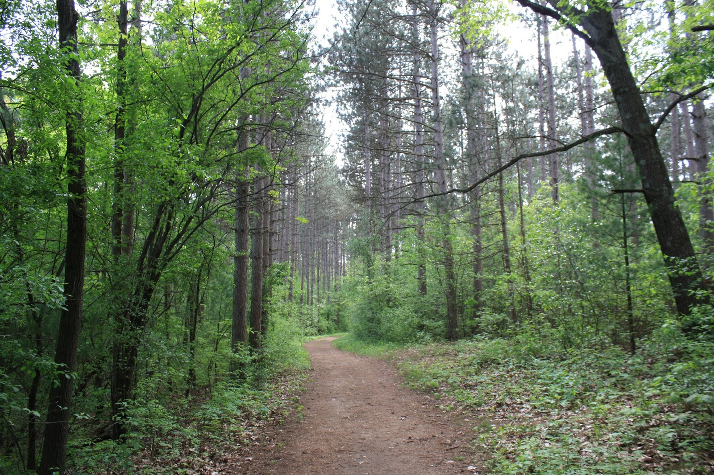

Introduction
Welcome to Hiking Wisconsin! If you're interested in hiking and want to find a place to do so then you've come to the right place! Here, you will find a selection of different parks to visit and see what they have to offer. Currently the selection of said parks are limited to central and Southern Wisconsin, but there are plans to add many more parks in the future. Not only can you find information on different parks here in Wisconsin, you can also find information on trails withing these parks, and whether or not these trails would interest you. The selection of trails found here vary from flat and easy for someone who just wants a leisurely walk, up to those who prefer a much bigger challenge. No matter what kind of experience you are looking for, you can find it here.
Parks
Wisconsin is a beautiful state that has a lot to offer as far as nature goes. A great place to get your fill of nature in Wisconsin is to visit one of the many parks. The parks found in this state vary greatly. Some of these parks are for people of any fiteness level, while others may be for those who are looking for something of a workout. All year round these park are open to the public and make a great day trip no matter what season it is. The summer heat makes for a great time to get out and see what this state has to offer. A cool fall day offers lots of beautiful colors while not being too hot for most. And if the cold is what you're looking for then even in the winter, a visit to a Wisconsin park can lift the spirits. The parks offered here will fit whatever adventure you're looking for, big or small.
Trails
Of the parks that are offered here, there are many different trails that can be used that go from a nice walk to a strenuous climb. For example, you have the Scuppernong trails in the Kettle Moraine State Forest that have multiple options that are all relatively easy for most people. On the other end here you can find information on Devil's Lake State Park. The trails found at Devil's Lake are much more difficult than the one's found in the Kettle Moraine State Forest. The trails are much more ups and downs and will give a harder time. There also are great spots for rock climbing that can offer a good challenge, along with a large lake if hiking isn't for you. Overall, there is a great deal of opportunities found within all of the trails within these parks.